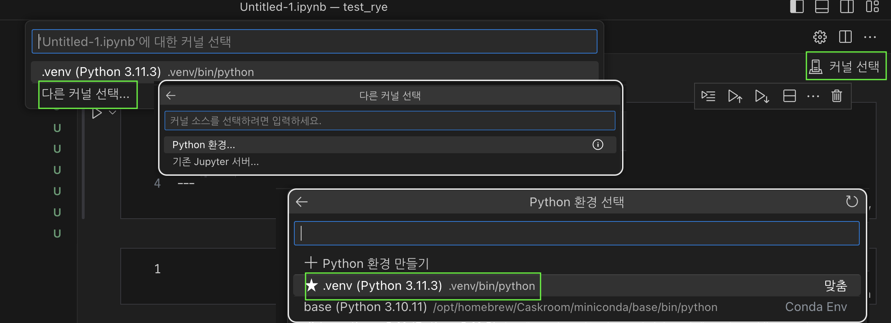

Rye
TL; DR
Rye를 이용해 편리하게 가상 환경을 구축해보자.
어딘가 부족한 Python 가상 환경
파이썬 용 가상 환경은 어딘가 하나씩 아쉽다. Venv, virtualenv, conda 등 다양한 선택지가 있지만 생각 없이 두루 쓸 수 있는 툴이 없다. 그나마 conda를 쓰고는 있으나 패키지 의존성 관리 등의 대목이 모자란다. 이상적인 파이썬 가상 환경이 갖추어야 하는 주요 기능은 두 가지다.
- 파이썬 버전 관리
- 패키지 의존성 및 버전 관리
파이썬 버전을 관리하는 pyenv와 패키지 의존성을 관리하는 poetry를 함께 부릴 수도 있다. 다만 이 녀석들을 별도로 다루는 게 그리 직관적이지 않고 활용할 수 있는 OS에도 제약이 존재한다. conda 정도의 편리함과 범용성을 지니는 Python 가상 환경은 없을까?
Rye는 파이썬 버전 관리에서 패키지 설치의 의존성 관리까지 필요한 내용을 손쉽게 지원한다. 아울러 프로젝트와 가상 환경이 함께 따라 다니기 때문에 환경 자체를 별도로 관리해야 하는 conda 보다 관리가 수월하다. 유일한 단점이라면 프로젝트가 극히 초기라는 것인데, 이 정도의 사용성이라면 빠르게 자리를 잡지 않을까 기대해본다.
여기 내용을 참고하자. 링크 글에서 보듯이 conda를 쓰면 환경이 쉽게 꼬인다. 그리고 이 상태가 되면 수습이 쉽지 않다.
설치 및 앱 관리
OS에 맞게 Rye를 설치해주자. 윈도의 경우는 winget을 통한 설치는 불가능하다.Macos에서는 공식 가이드에는 없지만 brew로 설치할 수 있다.
설치 항목을 참고하자.
Rye 앱 자체에 관한 업데이트와 삭제는 아래와 같다.
> rye self update # Rye 업데이트
> rye self uninstall # Rye 삭제 프로젝트 개시 및 패키지 설치
프로젝트를 생성할 상위 폴더에서 아래와 같이 생성 명령어를 실행한다.
> rye init {프로젝트-이름}만일 이미 폴더가 만들어져 있다면 해당 폴더 안에서 rye init을 실행하면 된다. 이제 프로젝트의 폴더에 들어가서 설치하려는 패키지를 add하고 sync로 이를 설치한다. ipykernel 패키지는 VS Code 등에서 .ipynb 파일을 불러와 작업하고자 할 때 필요한 패키지다. 이 패키지를 깔지 않으면 ipynb 파일 작업시 커널이 선택되지 않는다.
ipykernel과 pandas를 아래와 같이 설치해보자.
> rye add ipykernel pandas
> rye sync 필요한 패키지가 있다면 rye add...↔︎rye sync 사이클로 설치하면 된다.
가상 환경의 개별 설정은 pyproject.toml 파일을 통해서 관리된다. 만일 github 등을 통해서 pyproject.toml을 임포트했다면 rye sync로 필요한 패키지를 한방에 설치할 수 있다.
버전 관리 등의 자세한 내용은 공식 문서를 참고하자.
패키지 의존성 관리
패키지 의존성 관리의 좋은 예를 소개한다. pytorch의 cuda 버전이 필요하다고 가정하자. Rye의 디폴트 패키지 리포에는 해당 버전이 없다. 따라서 해당 whl을 끌고 오기 위해서는 별도의 저장소를 저장해줘야 한다. 파이토치 홈페이지에 따르면 cuda 버전의 설치 방법은 다음과 같다.
pip3 install torch torchvision torchaudio --index-url https://download.pytorch.org/whl/cu118--index-url https://download.pytorch.org/whl/cu118에 해당하는 부분을 Rye에서 별도로 설정할 수 있다. 자세한 내용은 여기를 확인하도록 하자.
VS Code에서 .ipynb 작업하기
프로젝트 폴더와 연동해서 VS Code를 열어주자. 터미널에서 code .을 실행하면 된다. 이제 해당 프로젝트의 파이썬 커널과 VS Code의 Jupyter 환경을 연결해보자.
 다른 커널 선택 > Python 환경 > .venv... 순으로 선택하면 된다.">
{kind=link}
커널 선택 > 다른 커널 선택 > Python 환경 > .venv... 순으로 선택하면 된다.스크린 샷에서 보듯이 커널 선택 > 다른 커널 선택 > Python 환경 > .venv...를 택하면 된다. 해당 프로젝트 폴더 아래 .venv 폴더 안에 있는 파이썬 환경을 가져오게 되면, 해당 프로젝트의 파이썬 커널과 설치된 패키지가 VS Code의 Jupyter 환경과 연결된다.
터미널에서 작업하기
가상 환경으로 Venv 패키지를 쓰고 있기 때문에 터미널에서 작업해야 한다면 해당 환경을 활성화하면 된다. 여기를 참고하자. 해당 프로젝트의 디렉토리에서
# Windows
> .venv\Scripts\activate # for activation
> deactivate # for deactivation
# Unix
> . .venv\Scripts\activate # for activation
> deactivate # for deactivationIn Short!
rye init,rye add...,rye sync의 순으로 rye 설정- VS Code에서 쓴다면,
ipykernel패키지를 rye 환경에 설치하도록 하자. - 프로젝트 폴더에서
code .을 통해 VS Code를 열거나, 아니면 이후 해당 폴더를 작업 폴더로 설정하자. - kernel 선택 시 프로젝트 폴더 아래 깔린
.venv환경을 선택한다.